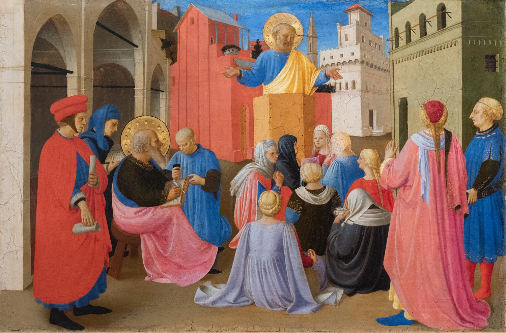

1 Pedro 5 — La Traducción Mister

⚠ Pedro predica mientras Marcos escribe, la tradición posterior de que Marcos puso por escrito la predicación de Pedro. La carta misma dice solo «Marcos, mi hijo» (versículo 13), y nombra a Silvano, no a Marcos, como aquel «por medio de» quien fue escrita (versículo 12).

Notas del traductor
«Así que a los ancianos que están entre ustedes los exhorto yo, anciano como ellos y testigo de los padecimientos de Cristo, y también partícipe de la gloria que está a punto de ser revelada». «Ancianos» es presbýteroi, «los ancianos de la congregación» de Santiago 5:14 y los de Éfeso en Hechos 20:17 (diccionario). Sympresbýteros, «anciano como ellos», está en un solo versículo (diccionario): el que se presentó como «apóstol de Jesucristo» (1 Pedro 1:1) habla a los ancianos como uno de ellos. «Los padecimientos de Cristo» son los de 1 Pedro 1:11 y 4:13; «la gloria que está a punto de ser revelada» es la frase de Pablo en Romanos 8:18, «la gloria que va a revelársenos». Westcott y Hort, Tregelles y la 27.ª edición de Nestle-Aland leen oun, «así que»; la 28.ª edición y el texto bizantino leen tous, «a los ancianos que están entre ustedes». La RV60 lee «Ruego a los ancianos que están entre vosotros, yo anciano también con ellos»; la TNM 1987 lee «a los [que son] ancianos entre ustedes»; la NVI lee «A los líderes de la iglesia que están entre ustedes».
«Pastoreen el rebaño de Dios que está entre ustedes, velando por él, no por obligación sino voluntariamente, según Dios; no por ganancia deshonesta sino con ánimo dispuesto». «Pastoreen» es poimaínō y «rebaño» es poímnion, las palabras de Pablo a los ancianos de Éfeso en Hechos 20:28, «a todo el rebaño … para pastorear la congregación de Dios» (diccionario). Episkopéō, «velar por», está en dos versículos (diccionario). El otro es el «velando» de Hebreos 12:15; el verbo va con epískopos, el «supervisor de sus almas» de 1 Pedro 2:25. Westcott y Hort no tienen la palabra, y el texto bizantino, con Westcott y Hort, no tiene «según Dios»: la RV 1909 lee «teniendo cuidado de ella, no por fuerza, sino voluntariamente», sin «según Dios»; la NVI lee «como Dios quiere». Anankastō̂s, «por obligación», está en un solo versículo (diccionario). «Voluntariamente» es hekousíōs, el «voluntariamente» de Hebreos 10:26 (diccionario). «Por ganancia deshonesta» es el adverbio de los «codiciosos de ganancias deshonestas» que quedan descalificados en 1 Timoteo 3:8 y Tito 1:7 (diccionario). «Según Dios» es la frase de 1 Pedro 4:6. La RV60 lee «Apacentad la grey de Dios que está entre vosotros, cuidando de ella»; la TNM 1987 lee «Pastoreen el rebaño de Dios bajo su custodia».
«No como enseñoreándose de las porciones que les tocaron, sino haciéndose ejemplos del rebaño». Katakyrieúō, «enseñorearse», está en cuatro versículos (diccionario), entre ellos el de Jesús, «los que son tenidos por gobernantes de las naciones se enseñorean de ellas», en Marcos 10:42. «Las porciones que les tocaron» es tō̂n klḗrōn, el plural de klē̂ros, una suerte o una parte, como en «le fue asignada su parte en este ministerio» de Hechos 1:17 (diccionario): las personas dadas al cuidado de cada anciano, aunque el griego las nombra solo como partes. La Vulgata latina lee in cleris, y la palabra «clero» viene de esta palabra griega a través del latín; aquí la palabra nombra al rebaño, no a sus dirigentes. «Ejemplos» es týpoi, como en «sé ejemplo para los creyentes» de 1 Timoteo 4:12 (diccionario). La RV 1909 lee «sobre las heredades del Señor»; la RV60 lee «no como teniendo señorío sobre los que están a vuestro cuidado»; la TNM 1987 lee «enseñoreándose de los que son la herencia de Dios»; la NVI lee «No sean tiranos con los que están a su cuidado».
«Y cuando el pastor principal sea manifestado, recibirán la corona inmarcesible de la gloria». Archipoímēn, «pastor principal», está en un solo versículo (diccionario): Cristo, «el pastor y supervisor de sus almas» de 1 Pedro 2:25 y «el gran pastor de las ovejas» de Hebreos 13:20, por encima de los ancianos que pastorean bajo él. «Sea manifestado» es phaneróō, como Cristo fue «manifestado al fin de los tiempos» en 1 Pedro 1:20. Amarántinos, «inmarcesible», está en un solo versículo (diccionario), y su casi gemela amárantos es la herencia «inmarcesible» de 1 Pedro 1:4. Un stéphanos es una guirnalda, el premio de los juegos, como en «una corona corruptible, pero nosotros una incorruptible» de 1 Corintios 9:25 (diccionario). «Recibirán» es komízō, el «obteniendo el fin de la fe» de 1 Pedro 1:9. La RV60 lee «cuando aparezca el Príncipe de los pastores, vosotros recibiréis la corona incorruptible de gloria»; la TNM 1987 lee «la inmarcesible corona de la gloria»; la NVI lee «el Pastor supremo».
«Asimismo, ustedes los más jóvenes, estén sujetos a los ancianos. Y todos ustedes, cíñanse de humildad unos para con otros». «Asimismo» continúa las instrucciones de la casa de 1 Pedro 2:13, 2:18, 3:1 y 3:7. «Los más jóvenes» son neṓteroi, los «más jóvenes» que sacaron a Ananías en Hechos 5:6; si «ancianos» significa aquí el cargo del versículo 1 o simplemente los hombres mayores, las lecturas difieren, y la TNM 1987 lee «estén en sujeción a los hombres de más edad». Enkombóō, «ceñirse, anudarse», está en un solo versículo (diccionario). Está formada sobre kómbos, un nudo, y pinta una prenda atada encima. «Humildad» es tapeinophrosýnē, el «con toda humildad y lágrimas» de Hechos 20:19 (diccionario). El texto bizantino añade «estando sujetos unos a otros»: la RV60 lee «y todos, sumisos unos a otros, revestíos de humildad»; la TNM 1987 lee «cíñanse con humildad mental»; la NVI lee «Revístanse todos de humildad»; la Vulgata latina lee insinuate.
«Porque “Dios se opone a los soberbios, pero da gracia a los humildes”». La línea es el griego de Proverbios 3:34, Kýrios hyperēphánois antitássetai, tapeinoîs de dídōsin chárin, palabra por palabra, salvo que el griego de Proverbios tiene «el Señor» donde Pedro, como Santiago, tiene «Dios»; el hebreo dice «De los burladores él se burla, pero a los humildes da gracia» (ambos comprobados; Proverbios 3 aún por llegar en esta traducción). Santiago 4:6 cita la misma línea en la misma forma y pasa a «Resistan al diablo» (4:7) y «Humíllense» (4:10); Pedro pasa a «Humíllense» (versículo 6) y «Resístanle» (versículo 9), en el orden inverso. «Soberbios» es hyperḗphanos (diccionario). La RV60 lee «Dios resiste a los soberbios»; la TNM 1987 lee «Dios se opone a los altivos, pero da bondad inmerecida a los humildes».
«Humíllense, pues, bajo la poderosa mano de Dios, para que él los enaltezca a su debido tiempo, echando sobre él toda su preocupación, porque a él le importan ustedes». «Humíllense» es tapeinóō, como en «Humíllense delante de Jehová, y él los enaltecerá» de Santiago 4:10 (diccionario). «La poderosa mano» es la mano del Éxodo: el griego de Deuteronomio 26:8 tiene en cheirí krataiâi donde esta traducción, desde el hebreo, lee «con mano fuerte» (Deuteronomio 26:8, griego comprobado). Krataiós, «poderosa», está en un solo versículo del Nuevo Testamento. «A su debido tiempo» es en kairôi; la Vulgata latina lee «en el tiempo de la visitación», in tempore visitationis. «Echando sobre él» es epirríptō, el verbo de los mantos que los discípulos echaron sobre el pollino en Lucas 19:35. «Preocupación» es mérimna, «las preocupaciones de esta vida» de Lucas 21:34 y «la preocupación por todas las congregaciones» de Pablo en 2 Corintios 11:28 (diccionario). La línea recuerda el griego del Salmo 55:22 (54:23 en la numeración griega), epírripson epí kýrion tēn mérimnán sou, «echa sobre el Señor tu preocupación», donde el hebreo tiene «echa sobre Jehová tu carga» (ambos comprobados; Salmo 55 aún por llegar en esta traducción); Pedro no lo cita. «Le importan» es mélei, la palabra de los discípulos, «¿no te importa que perecemos?», en Marcos 4:38. La RV60 lee «echando toda vuestra ansiedad sobre él, porque él tiene cuidado de vosotros»; la RV 1909 lee «Echando toda vuestra solicitud en él»; la TNM 1987 lee «echan sobre él toda su inquietud».
«Sean sobrios; manténganse despiertos. Su adversario el diablo anda alrededor como león rugiente, buscando a quién devorar». «Sean sobrios» es nḗphō, como en 1 Pedro 1:13 y 4:7 (diccionario); «manténganse despiertos» es grēgoréō, el «Permanezcan despiertos y oren» de Jesús en Getsemaní, en Mateo 26:41, y el par está junto en 1 Tesalonicenses 5:6, «mantengámonos despiertos y seamos sobrios» (diccionario). Antídikos, «adversario», está en cuatro versículos (diccionario). En los otros es el contrario en un pleito: el adversario camino del tribunal en Mateo 5:25 (ya en estas páginas) y Lucas 12:58, y el «Hazme justicia contra mi adversario» de la viuda en Lucas 18:3. «El diablo» es diábolos, «calumniador», como en «ni den lugar al diablo» de Efesios 4:27 (diccionario). Ōrýomai, «rugir», está en un solo versículo (diccionario). La imagen recuerda el griego del Salmo 22:13 (21:14 en la numeración griega), «como león que arrebata y ruge», con el mismo verbo, donde el hebreo tiene «león que despedaza y ruge» (ambos comprobados; Salmo 22 aún por llegar en esta traducción). «Devorar» es katapínō, «tragar», como en «La muerte fue devorada en victoria» de 1 Corintios 15:54. El texto bizantino lee «buscando a quién pueda devorar». La RV60 lee «como león rugiente, anda alrededor buscando a quien devorar»; la TNM 1987 lee «Mantengan su juicio, sean vigilantes»; la NVI lee «ronda como león rugiente».
«Resístanle, firmes en la fe, sabiendo que los mismos padecimientos se van cumpliendo en su hermandad en el mundo». «Resístanle» es anthístēmi, como en «Resistan al diablo, y huirá de ustedes» de Santiago 4:7 y «para que puedan resistir en el día malo» de Efesios 6:13. Stereós, «firme», está en cuatro versículos, como en «el fundamento firme de Dios permanece en pie» de 2 Timoteo 2:19 y el «alimento sólido» de Hebreos 5:12. Adelphótēs, «hermandad», está en dos versículos (diccionario), ambos en esta carta: «Amen a la hermandad» en 1 Pedro 2:17, y este. «Se van cumpliendo» es epiteléō, el verbo de «la llevará a término» en Filipenses 1:6: lo que sufren los lectores es lo mismo que están pasando los creyentes en otras partes. La RV60 lee «los mismos padecimientos se van cumpliendo en vuestros hermanos en todo el mundo»; la TNM 1987 lee «en toda la asociación de sus hermanos en el mundo»; la NVI lee «los creyentes en todo el mundo».
«Y el Dios de toda gracia, que los llamó a su gloria eterna en Cristo, después de que hayan sufrido un poco de tiempo, él mismo los remendará, fortalecerá, robustecerá y cimentará». «Un poco de tiempo» es olígon, el «ahora por un poco de tiempo» de 1 Pedro 1:6. Los cuatro verbos: «remendar» es katartízō, la palabra que esta traducción imprime «remendar» en Gálatas 6:1 y 2 Corintios 13:11 y «equipar» en Hebreos 13:21 (diccionario); «fortalecer» es stērízō, como en «fortalezcan sus corazones» de Santiago 5:8 (diccionario); sthenóō, «robustecer», está en un solo versículo (diccionario); y «cimentar» es themelióō, el «arraigados y cimentados en amor» de Efesios 3:17 (diccionario). Westcott y Hort y Tregelles no tienen el cuarto verbo, y la TNM 1987 tiene tres: «terminará él mismo el entrenamiento de ustedes; él los hará firmes, él los hará fuertes». El Texto Recibido lee «nos llamó» y pone los verbos como un deseo: la RV60 lee «que nos llamó a su gloria eterna en Jesucristo … él mismo os perfeccione, afirme, fortalezca y establezca». La NVI lee «los restaurará y los hará fuertes, firmes y estables».
«A él sea el poder por los siglos de los siglos. Amén». La doxología de 1 Pedro 4:11 vuelve con «el poder», krátos, solo (diccionario); aquí «él» es «el Dios de toda gracia» del versículo 10. No hay verbo en el griego, como en Hebreos 13:21. El texto bizantino añade «la gloria y»: la RV60 lee «A él sea la gloria y el imperio por los siglos de los siglos». Westcott y Hort y la 28.ª edición de Nestle-Aland no tienen «de los siglos»: la TNM 1987 lee «A él sea la potencia para siempre»; la NVI lee «A él sea el poder por los siglos de los siglos».
«Por medio de Silvano, el hermano fiel, según lo considero, les he escrito en pocas palabras, exhortándolos y testificando que esta es la verdadera gracia de Dios. Manténganse en ella». Silouanós está en cuatro versículos (enciclopedia). Los otros tres son de Pablo: «por mí, y Silvano, y Timoteo» en 2 Corintios 1:19, y los saludos iniciales de 1 Tesalonicenses 1:1 y 2 Tesalonicenses 1:1. Hechos lo llama Silas, enviado desde Jerusalén con la carta del concilio en Hechos 15:22 y escogido por Pablo en Hechos 15:40. ⚠ «Por medio de Silvano les he escrito» se lee de dos maneras, y esta traducción no elige. Según una, Silvano lleva la carta; en Hechos 15:23 la carta de Jerusalén se envía «escribiendo por mano de ellos», y Judas y Silas la llevan y la anuncian «de palabra» (Hechos 15:27). Según la otra, Silvano ayuda a escribirla, como secretario o redactor. La NVI lee «Con la ayuda de Silvano»; la TNM 1987 lee «Mediante Silvano, un fiel hermano»; la RV60 lee «Por conducto de Silvano, a quien tengo por hermano fiel».
«En pocas palabras … que esta es la verdadera gracia de Dios. Manténganse en ella». «En pocas palabras» es di’ olígōn; Hebreos termina con la misma disculpa en otras palabras, «les he escrito en pocas palabras» (Hebreos 13:22). «La verdadera gracia de Dios» es cháris, la gracia de 1 Pedro 1:13, «la gracia que se les trae» (diccionario). «Manténganse» es un mandato en el texto impreso; el texto bizantino lee «en la cual están»: la RV60 lee «la verdadera gracia de Dios, en la cual estáis», la TNM 1987 lee «en la cual, estén firmes», y la NVI lee «Manténganse firmes en ella».
«Los saluda la que está en Babilonia, elegida juntamente con ustedes, y también Marcos, mi hijo». ⚠ El griego no tiene sustantivo: hē en Babylō̂ni syneklektḗ, «la que está en Babilonia, elegida juntamente», en femenino. Syneklektós, «elegida juntamente», está en un solo versículo (diccionario), y retoma los «expatriados elegidos» de 1 Pedro 1:1. La mayoría de los lectores entiende que «la que» es una congregación, y la RV60 y la RV 1909 suplen la palabra, «La iglesia que está en Babilonia»; la Vulgata latina lee ecclesia. Otros entienden que es una mujer conocida por los lectores. La TNM 1987 lee «La que está en Babilonia»; la NVI lee «la comunidad que está en Babilonia».
⚠ Qué Babilonia, las lecturas difieren, y esta traducción no elige. Babylṓn está en once versículos del Nuevo Testamento (enciclopedia). Los cuatro primeros son la antigua ciudad del exilio, en Mateo 1:11, 1:12 y 1:17 y en el «más allá de Babilonia» de Esteban en Hechos 7:43; seis son la «Babilonia la grande» del Apocalipsis, de 14:8 a 18:21. Aquí, la lectura de la mayoría toma el nombre como una cubierta para Roma, la capital del imperio en que los lectores son «expatriados»; las pruebas que se ofrecen son el uso del nombre en el Apocalipsis y noticias antiguas de Pedro en Roma (se informa, no comprobado aquí). Otros lo toman como la ciudad del Éufrates, donde vivía una comunidad judía, y una tercera lectura nombra un fuerte romano llamado Babilonia en Egipto (ambas cosas se informan, no comprobadas aquí). El griego dice solo «en Babilonia».
«Y también Marcos, mi hijo. Salúdense unos a otros con un beso de amor. Paz a todos ustedes que están en Cristo». Márkos está en ocho versículos (enciclopedia): Juan llamado Marcos, a cuya casa materna fue Pedro al salir libre de la cárcel (Hechos 12:12), primo de Bernabé (Colosenses 4:10), y el hombre que Pablo llamó «útil para el ministerio» (2 Timoteo 4:11). «Mi hijo» no se dice que signifique un hijo de nacimiento. Phílēma, «beso», está en siete versículos (diccionario); cuatro veces Pablo tiene «un beso santo», como en Romanos 16:16, y solo aquí es «un beso de amor». La Vulgata latina lee «con un beso santo» y «Gracia a todos ustedes». El texto bizantino añade «Jesús. Amén»: la RV60 lee «Paz sea con todos vosotros los que estáis en Jesucristo. Amén». La TNM 1987 lee «con un beso de amor».
Patrones que vale la pena recordar
Dónde esta traducción mantiene las palabras exactas: «anciano como ellos»; «la gloria que está a punto de ser revelada», como en Romanos 8:18; «pastoreen» y «rebaño», como en Hechos 20:28; «velando», como en Hebreos 12:15; «voluntariamente»; «ganancia deshonesta», como en 1 Timoteo 3:8; «enseñoreándose», como en Marcos 10:42; «las porciones que les tocaron»; «pastor principal»; «inmarcesible», como en 1:4; «cíñanse»; «Dios se opone a los soberbios», como en Santiago 4:6; «preocupación»; «manténganse despiertos», como en Mateo 26:41; «adversario», como en Lucas 18:3; «devorar», como en 1 Corintios 15:54; «hermandad», como en 2:17; «remendar», como en Gálatas 6:1; «cimentar», como en Efesios 3:17; «La que está en Babilonia», sin suplir sustantivo; y «un beso de amor».
Ecos cumplidos. «Los padecimientos de Cristo» y la gloria por revelarse de 1 Pedro 1:11 y 1 Pedro 4:13; el pastor y supervisor de 1 Pedro 2:25, ahora el pastor principal; la herencia inmarcesible de 1 Pedro 1:4; el «asimismo» de las instrucciones de la casa de 1 Pedro 2:13; sean sobrios de 1 Pedro 1:13 y 1 Pedro 4:7; la hermandad de 1 Pedro 2:17; «un poco de tiempo» de 1 Pedro 1:6; el poder de la doxología de 1 Pedro 4:11; y los elegidos expatriados de 1 Pedro 1:1, ahora «elegida juntamente».
El fin de la carta. 1 Pedro comenzó con «los expatriados elegidos de la Dispersión» y termina con saludos de «la que está en Babilonia», otro lugar de exilio; comenzó con «gracia y paz les sean multiplicadas» y termina con «Paz a todos ustedes que están en Cristo». La «Babilonia la grande» del Apocalipsis (14:8; 17:5; 18:2) es donde vuelve el nombre.
Siguiente en este libro: ninguno; 1 Pedro termina aquí.